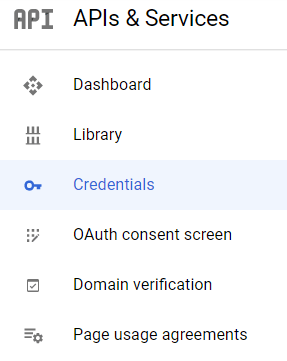

Google Sign-In Authentication¶
The Google Sign-In Authentication is a useful function that allows Odoo users to sign in to their database with their Google account.
This is particularly helpful if the organization uses Google Workspace, and wants employees within the organization to connect to Odoo using their Google Accounts.
Warning
Databases hosted on Odoo.com should not use Oauth login for the owner or administrator of the database as it would unlink the database from their Odoo.com account. If Oauth is set up for that user, the database will no longer be able to be duplicated, renamed or otherwise managed from the Odoo.com portal.
Configuration¶
The integration of the Google sign-in function requires configuration both on Google and Odoo.
Google API Dashboard¶
Go to the Google API Dashboard.
Make sure the right project is opened. If there isn’t a project yet, click on Create Project, fill out the project name and other details of the company, and click on Create.

Tip
Choose the name of the company from the drop-down menu.
OAuth consent screen¶
On the left side menu, click on .

Choose one of the options (Internal / External), and click on Create.

Warning
Personal Gmail Accounts are only allowed to be External User Type, which means Google may require an approval, or for Scopes to be added on. However, using a Google WorkSpace account allows for Internal User Type to be used.
Note, as well, that while the API connection is in the External testing mode, then no approval is necessary from Google. User limits in this testing mode is set to 100 users.
Fill out the required details and domain info, then click on Save and Continue.
On the page, leave all fields as is, and click on Save and Continue.
Next, if continuing in testing mode (External), add the email addresses being configured under the Test users step by clicking on Add Users, and then the Save and Continue button. A summary of the app registration appears.
Finally, scroll to the bottom, and click on Back to Dashboard.
Credentials¶
On the left side menu, click on .
Click on Create Credentials, and select OAuth client ID.

Select Web Application as the Application Type. Now, configure the allowed pages on which Odoo will be redirected.
In order to achieve this, in the Authorized redirect URIs field, enter the database’s domain immediately followed by
/auth_oauth/signin. For example:https://mydomain.odoo.com/auth_oauth/signin, then click on Create.Now that the OAuth client has been created, a screen will appear with the Client ID and Client Secret. Copy the Client ID for later, as it will be necessary for the configuration in Odoo, which will be covered in the following steps.
Google Authentication on Odoo¶
Retrieve the Client ID¶
Once the previous steps are complete, two keys are generated on the Google API Dashboard: Client ID and Client Secret. Copy the Client ID.

Odoo activation¶
Go to and activate OAuth Authentication.
Note
Odoo may prompt the user to log-in again after this step.
Go back to , activate the selection and Save. Next, return to and activate the selection. Then fill out the Client ID with the key from the Google API Dashboard, and Save.

Note
Google OAuth2 configuration can also be accessed by clicking on OAuth Providers under the OAuth Authentication heading in .
Log in to Odoo with Google¶
To link the Google account to the Odoo profile, click on Log in with Google when first logging into Odoo.

Existing users must reset their password to access the page, while new users can directly click on Log in with Google, instead of choosing a new password.